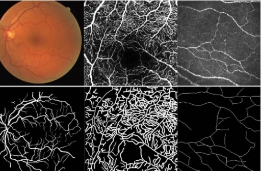
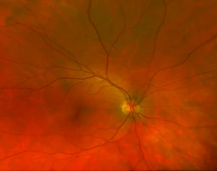
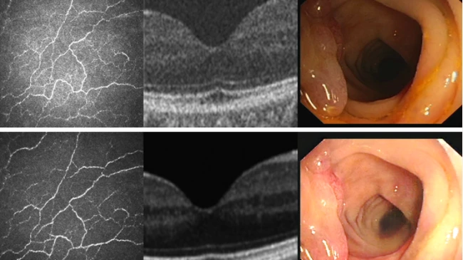
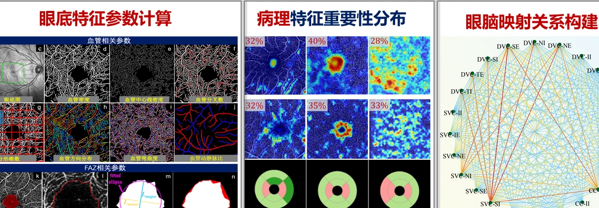

研究方向 RESEARCH TOPICS
从医学影像中提取结构、功能与风险，为精准诊疗提供可信的智能工具
我们的研究从真实临床需求出发，强调算法、数据与应用场景的闭环。以下方向相互交叉，共同构成 iMED 的研究版图。

iMED research visual · Biomedical Image Analysis
Biomedical Image Analysis
医学影像分析
围绕医学图像的分割、检测、配准与结构化理解，研究可泛化、可解释的深度学习方法，并面向真实临床任务验证模型性能。
SegmentationDetectionTopology
查看相关成果 →
iMED research visual · AI for Ophthalmology
AI for Ophthalmology
眼科智能诊疗
面向眼底、OCT 与 OCTA 等眼科影像，开展血管分析、病变识别和眼脑联合计算，帮助临床更早发现疾病风险。
FundusOCT / OCTAEye–Brain
查看相关成果 →
iMED research visual · Trustworthy Medical AI
Trustworthy Medical AI
可信医学人工智能
关注跨设备、跨中心数据上的模型泛化与不确定性估计，探索面向源自由学习和低标注场景的可靠影像分割方法。
UncertaintyDomain GeneralizationClinical AI
查看相关成果 →
iMED research visual · Eye–Brain Joint Computing
Eye–Brain Joint Computing
眼脑联合计算
以视网膜作为观察脑健康的窗口，研究眼底微血管、脑白质损伤与认知功能之间的联系，探索无创的风险评估方法。
Retinal BiomarkersBrain HealthMultimodal Learning
查看相关成果 →